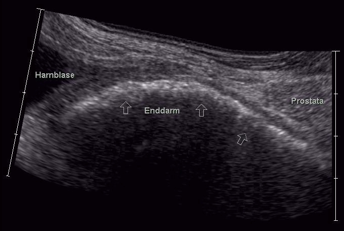

Ficha del catálogo
Hiperplasia prostática benigna
- Sistema
- Reproductor
- Modalidad
- US
- Región
- Pelvis masculina, próstata
- Dificultad
- Básico
La hiperplasia prostática benigna es el crecimiento no maligno de la zona de transición de la próstata, muy prevalente a partir de la sexta década de la vida. Provoca síntomas del tracto urinario inferior por obstrucción del flujo, con disminución del chorro, urgencia y nicturia. Su repercusión clínica depende más del grado de obstrucción que del volumen absoluto de la glándula.
Técnica
El ultrasonido suprapúbico permite estimar el volumen prostático y medir el residuo posmiccional, mientras que el abordaje transrectal ofrece mejor resolución zonal. La resonancia multiparamétrica se solicita cuando existe sospecha de cáncer asociado o para planificar tratamientos dirigidos. El volumen se calcula con la fórmula del elipsoide a partir de los tres diámetros.
Qué observar
- Aumento del volumen glandular con predominio de la zona de transición
- Protrusión del lóbulo medio hacia la luz vesical
- Nódulos heterogéneos y calcificaciones en la zona de transición
- Engrosamiento y trabeculación de la pared vesical con divertículos
- Residuo posmiccional significativo
- Repercusión sobre el tracto urinario superior con ureterohidronefrosis
Hallazgos
Se observa una próstata aumentada de tamaño con una zona de transición expandida, heterogénea y nodular, que comprime la zona periférica adelgazándola. En resonancia los nódulos glandulares presentan señal variable en T2 con cápsula bien definida, y los nódulos estromales son de baja señal. La vejiga puede mostrar hipertrofia del detrusor, trabeculación, divertículos y residuo posmiccional aumentado.
Perlas
El grado de protrusión del lóbulo medio dentro de la vejiga se correlaciona mejor con la obstrucción y con el fracaso del tratamiento médico que el volumen prostático total. Por ello conviene medir siempre esa protrusión y el residuo posmiccional, no solo informar el volumen glandular.
Diagnóstico diferencial
- Adenocarcinoma de próstata
- Se localiza preferentemente en la zona periférica, con señal baja en T2, restricción marcada de la difusión y realce precoz.
- Prostatitis crónica
- Cursa con dolor y síntomas irritativos, cambios difusos en la zona periférica y contexto clínico inflamatorio.
- Estenosis uretral
- Produce síntomas obstructivos con próstata de tamaño normal y se demuestra mediante estudio uretral dinámico.
- Vejiga neurógena
- Presenta residuo elevado y pared trabeculada con antecedente neurológico y estudio urodinámico característico.
Simuladores
- Nódulo hiperplásico prominente que simula lesión tumoral
- Quiste de las vesículas seminales de gran tamaño
- Tumor vesical de base que se proyecta sobre la próstata
Por modalidad
- TC
- Aporta poco valor diagnóstico directo, pero muestra el crecimiento glandular y sus consecuencias sobre vejiga y uréteres.
- US
- Permite calcular el volumen, medir el residuo posmiccional y valorar la protrusión intravesical de forma sencilla y reproducible.
Protocolo
Ultrasonido suprapúbico con vejiga moderadamente llena, midiendo los tres diámetros prostáticos para calcular el volumen mediante la fórmula del elipsoide, seguido de una nueva medición vesical tras la micción para obtener el residuo. El abordaje transrectal emplea transductor de alta frecuencia con cortes axiales y sagitales. La resonancia multiparamétrica incluye T2 de alta resolución, difusión y estudio dinámico con contraste.
Clasificación
En resonancia se describen patrones de hiperplasia según el predominio glandular o estromal y su distribución, lo que orienta la respuesta a distintos tratamientos. El grado de protrusión intravesical del lóbulo medio se estratifica habitualmente en tres niveles según los milímetros que sobresalen hacia la luz vesical, con implicación pronóstica sobre la obstrucción.
Errores frecuentes
- Informar únicamente el volumen prostático sin medir el residuo posmiccional ni la protrusión intravesical
- Interpretar un nódulo hiperplásico de la zona de transición como lesión tumoral sospechosa
- Medir el residuo con la vejiga excesivamente llena, lo que sobreestima el valor obtenido

hiperplasia prostática próstata zona de transición residuo posmiccional lóbulo medio obstrucción urinaria volumen prostático